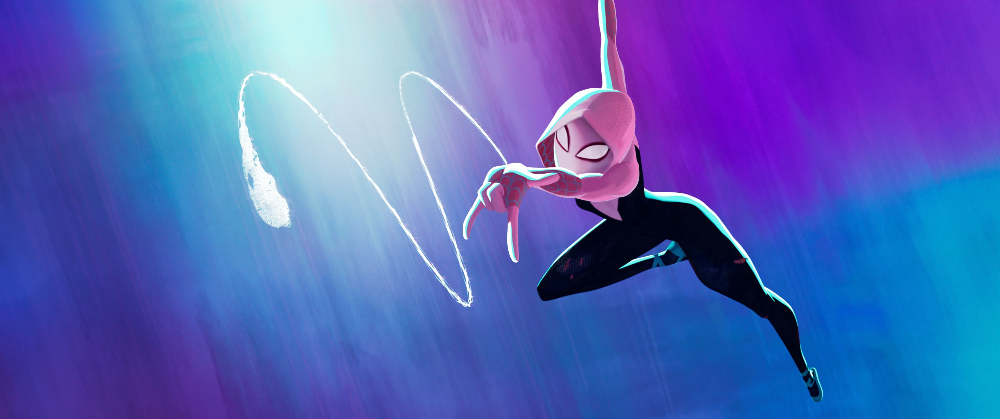
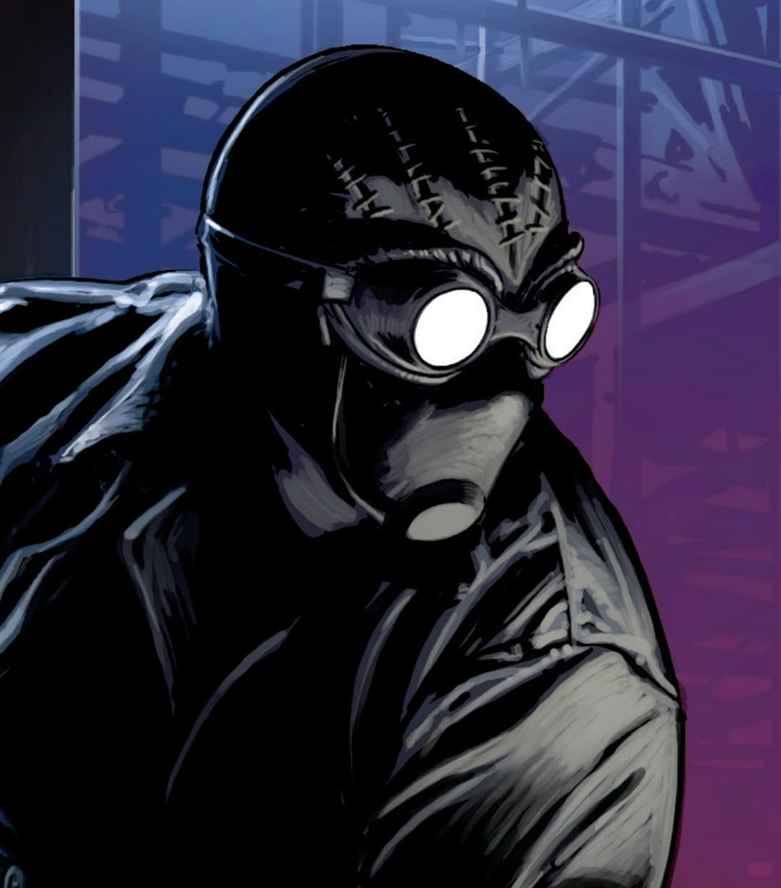

| Characters |
Description |
Strength's |
 |
Miles Morales, a young teenage boy who was bit by a radio-active spider which caused him to be spider-man and now is carrying the job to save the world. |
Climbing, Shooting Webs, Spider Senses, Power |
|  |
Gwen Stacey, a young teenage girl, was a batchmate of Miles Morales, and was also bitten by a radio-active spider which caused her to be part of the group who saves the world. |
Climbing, Speed, Stamina, Flexibility |
|  |
Noir, a Spider-Man from another spider-verse, really well-experienced, already has went through alot and knows how to defeat even the strongest enemies. |
Sixth-Sense, Reflexes, Silent, Agility |
 |
Spider 2099, also known as Miguel O Hara, the leader of the whole spider-man group, the strongest aswell, was also from a different Spider-Verse. |
Supernatural power, Super Strength, Speed, Stamina |